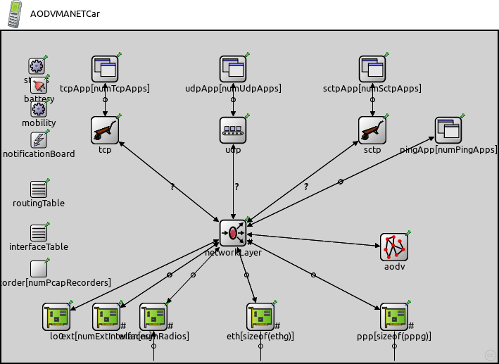

This documentation is released under the Creative Commons license
This documentation is released under the Creative Commons license(no description)
The following diagram shows usage relationships between types. Unresolved types are missing from the diagram. Click here to see the full picture.
The following diagram shows inheritance relationships for this type. Unresolved types are missing from the diagram. Click here to see the full picture.

| Name | Type | Description |
|---|---|---|
| AODVRouter | compound module |
It models a ~WirelessHost extended with ~AODVRouting submodule. |
| Name | Type | Default value | Description |
|---|---|---|---|
| hasStatus | bool | false | |
| numExtInterfaces | int | 0 | |
| numRadios | int | 1 |
the number of radios in the router. by default no wireless |
| numPcapRecorders | int | 0 |
no of PcapRecorders. |
| mobilityType | string | numRadios > 0 ? "StationaryMobility" : "" | |
| routingFile | string | "" | |
| IPForward | bool | true | |
| forwardMulticast | bool | false | |
| batteryType | string | "" | |
| numTcpApps | int | 0 |
no of TCP apps. Specify the app types in INI file with tcpApp[0..1].typename="TCPEchoApp" syntax |
| numUdpApps | int | 0 |
no of UDP apps. Specify the app types in INI file with udpApp[0..1].typename="UDPVideoStreamCli" syntax |
| numSctpApps | int | 0 |
no of SCTP apps. Specify the app types in INI file with sctpApp[0..1].typename="SCTPServer" syntax |
| numPingApps | int | 0 |
no of PING apps. Specify the app types in INI file with pingApp[0..1].typename="PingApp" syntax |
| hasTcp | bool | numTcpApps>0 | |
| hasUdp | bool | numUdpApps>0 | |
| hasSctp | bool | numSctpApps>0 | |
| tcpType | string | firstAvailable("TCP", "TCP_lwIP", "TCP_NSC", "TCP_None") |
tcp implementation (e.g. ~TCP, ~TCP_lwIP, ~TCP_NSC) or ~TCPSpoof |
| udpType | string | firstAvailable("UDP","UDP_None") | |
| sctpType | string | firstAvailable("SCTP","SCTP_None") |
| Name | Value | Description |
|---|---|---|
| display | i=device/cellphone | |
| node | ||
| labels | node |
| Name | Direction | Size | Description |
|---|---|---|---|
| radioIn [ ] | input | numRadios | |
| pppg [ ] | inout | ||
| ethg [ ] | inout |
| Name | Type | Default value | Description |
|---|---|---|---|
| status.initialStatus | string | "UP" |
TODO @signal, @statistic |
| networkLayer.configurator.networkConfiguratorModule | string | "configurator" |
the absolute path to the IPv4NetworkConfigurator; use "" if there is no configurator |
| networkLayer.configurator.configureRoutingTable | bool | true |
add routing entries to routing table (uses the configurator module) |
| networkLayer.ip.routingTableModule | string | ||
| networkLayer.ip.procDelay | double | 0s | |
| networkLayer.ip.timeToLive | int | 32 | |
| networkLayer.ip.multicastTimeToLive | int | 32 | |
| networkLayer.ip.fragmentTimeout | double | 60s | |
| networkLayer.ip.forceBroadcast | bool | false | |
| networkLayer.arp.routingTableModule | string | ||
| networkLayer.arp.retryTimeout | double | 1s |
number seconds ARP waits between retries to resolve an IPv4 address |
| networkLayer.arp.retryCount | int | 3 |
number of times ARP will attempt to resolve an IPv4 address |
| networkLayer.arp.cacheTimeout | double | 120s |
number seconds unused entries in the cache will time out |
| networkLayer.arp.globalARP | bool | false | |
| networkLayer.arp.deletePackets | bool | true |
if global ARP and enty is not in memory delete the datagram |
| routingTable.routerId | string | "auto" |
for routers, the router id using IPv4 address dotted notation; specify "auto" to select the highest interface address; should be left empty ("") for hosts |
| interfaceTable.displayAddresses | bool | true |
whether to display IP addresses on links |
| pcapRecorder.verbose | bool | false |
whether to log packets on the module output |
| pcapRecorder.pcapFile | string | "" |
the PCAP file to be written |
| pcapRecorder.snaplen | int | 65535 |
maximum number of bytes to record per packet |
| pcapRecorder.dumpBadFrames | bool | true |
enable dump of frames with hasBitError |
| pcapRecorder.moduleNamePatterns | string | "wlan[*] eth[*] ppp[*] ext[*]" |
space-separated list of sibling module names to listen on |
| pcapRecorder.sendingSignalNames | string | "packetSentToLower" |
space-separated list of outbound packet signals to subscribe to |
| pcapRecorder.receivingSignalNames | string | "packetReceivedFromLower" |
space-separated list of inbound packet signals to subscribe to |
| lo0.lo.mtu | int | 4470B | |
| aodv.networkProtocolModule | string | "^.networkLayer.ip" | |
| aodv.askGratuitousRREP | bool | false |
see RFC 3561: 6.6.3 |
| aodv.useHelloMessages | bool | false |
see RFC 3561: 6.9 |
| aodv.useLocalRepair | bool | false |
see RFC 3561: 6.12 *not implemented yet* |
| aodv.udpPort | int | 654 | |
| aodv.maxPeriodicJitter | double | helloInterval / 4 |
it MUST NOT be negative; it MUST NOT be greater than MESSAGE_INTERVAL/2; it SHOULD NOT be greater than MESSAGE_INTERVAL/4. |
| aodv.periodicJitter | double | uniform(0s, maxPeriodicJitter) |
jitter for externally triggered message generation and message forwarding |
| aodv.maxJitter | double | 5ms |
RFC 5148: need more revise: As well as the decision as to whether to use jitter being dependent on the medium access control and lower layers, the selection of the MAXJITTER parameter SHOULD be appropriate to those mechanisms. |
| aodv.jitter | double | uniform(0ms, maxJitter) |
jitter for broadcasts |
| aodv.helloInterval | double | 1s |
every helloInterval seconds a node broadcasts Hello messages (if it is necessary) |
| aodv.allowedHelloLoss | int | 2 |
allowedHelloLoss * helloInterval is the lifetime value for Hello messages |
| aodv.activeRouteTimeout | double | 3s |
the timeout value for cached routes If Hello messages are used, then the ACTIVE_ROUTE_TIMEOUT parameter value MUST be more than the value (ALLOWED_HELLO_LOSS * HELLO_INTERVAL). |
| aodv.netDiameter | int | 35 |
the maximum possible number of hops between two nodes in the network |
| aodv.nodeTraversalTime | double | 0.04s |
an estimation of the average one-hop traversal time |
| aodv.rerrRatelimit | int | 10 |
maximum number of RERR messages that the AODV may originate in 1s. |
| aodv.rreqRetries | int | 2 |
specifies the number of times AODV will repeat an expanded ring search for a destination |
| aodv.rreqRatelimit | int | 10 |
maximum number of RREQ messages that the AODV may originate in 1s. |
| aodv.timeoutBuffer | int | 2 |
plus time to wait for a delayed RREP (due to congestion) (to omit this buffer set it to 0) |
| aodv.ttlStart | int | 2 |
specifies the TTL value when initiating a route request |
| aodv.ttlIncrement | int | 2 |
specifies the value by which the TTL will be incremented each time a RREQ is retransmitted |
| aodv.ttlThreshold | int | 7 |
the maximum value of TTL over which NET_DIAMETER value will be used to broadcast any RREQ |
| aodv.localAddTTL | int | 2 |
it is used by the formula which calculates the initial TTL of the RREQ for a local repair |
| aodv.myRouteTimeout | double | 2 * activeRouteTimeout |
the value of the lifetime field that a destination node places in RREPs |
| aodv.deletePeriod | double | 5 * max(activeRouteTimeout, helloInterval) |
the time after which an expired route is deleted |
| aodv.blacklistTimeout | double | rreqRetries * netTraversalTime |
the time after which a blacklisted node is removed from the blacklist |
| aodv.netTraversalTime | double | 2 * nodeTraversalTime * netDiameter |
an estimation of the traversal time for the complete network |
| aodv.nextHopWait | double | nodeTraversalTime + 0.01s |
timeout for a RREP-ACK |
| aodv.pathDiscoveryTime | double | 2 * netTraversalTime |
buffer timeout for each broadcasted RREQ message |
module AODVMANETCar extends AODVRouter { }
This documentation is released under the Creative Commons license